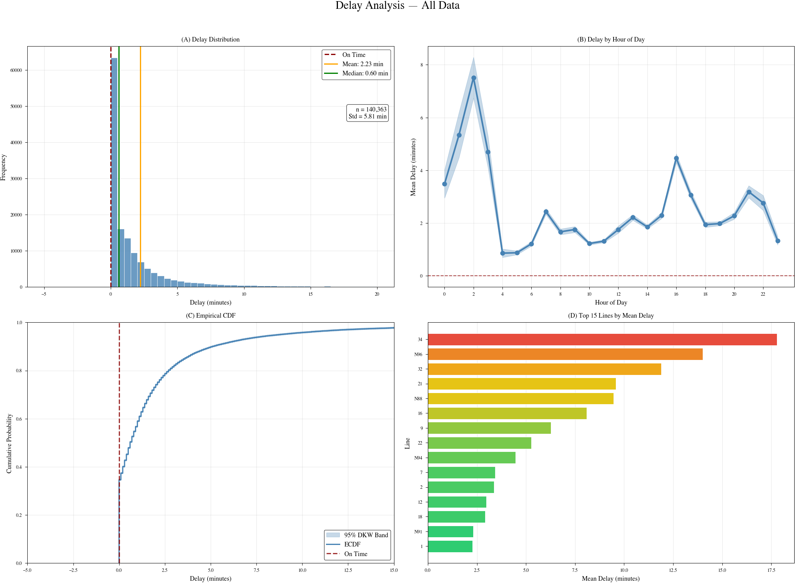

Delay Analysis — Data Literacy Project
This project analyzes public transit delays in the Tübingen bus network using real-time data collected from the TRIAS API between November 2025 and January 2026. The visualization below shows the network topology with edges colored by average delay: gray indicates punctual service, while yellow to red indicates increasing delays.
Select a specific line to view the network map
The combined view of all lines (230 stops, 2,900+ edges) is too complex for interactive rendering.
Figure 1: Interactive network map showing bus routes and average delays per segment.
Summary: Loading...
| From | To | Avg Delay (min) | Trips |
|---|
Data was collected continuously from the TRIAS real-time transit API, capturing planned and estimated arrival/departure times for all bus stops in the Tübingen network. Delays are calculated as the difference between estimated and planned times. The network graph is constructed by connecting consecutive stops within each journey, with edge weights representing the mean delay observed on that segment.
The analysis reveals that most bus segments operate with minimal delays (under 1 minute on average), indicated by gray coloring in the network map. However, certain routes and time periods show consistently higher delays, particularly during peak hours and on routes passing through the city center. The interactive visualization allows exploration of delay patterns by individual bus line.
The following plots show the delay distribution and patterns for the selected time period. Use the Time Period selector above to compare before and after the schedule change.
This combined figure presents four key aspects of the delay analysis: (A) The delay distribution histogram shows most observations cluster around 0-2 minutes. (B) Hourly patterns reveal peak delays during rush hours (7-9 AM, 4-6 PM). (C) The empirical CDF with 95% DKW confidence bands shows cumulative delay probabilities. (D) Top 15 delayed lines are colored by severity (green to red gradient).
Figure 2: Combined delay analysis showing distribution, hourly patterns, ECDF, and top delayed lines.